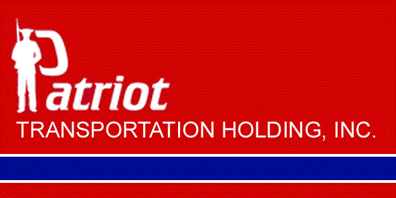

Patriot Transportation Holding, Inc., is a publicly traded company that is listed on the Nasdaq Stock Market. Patriot Transportation Holding, Inc., stock is traded under the symbol of "PATI". All filings with the Securities and Exchange Commission are available under the Investor Relations page.
Edward L. Baker - Chairman Emeritus
Thompson S. Baker II - Chairman
John D. Milton, Jr. - Executive Vice President and Chief Financial Officer and Secretary and Treasurer
Rob Sandlin - Chief Executive Officer and President
John D. Klopfenstein - Chief Accounting Officer
Jeff Anthony - Vice President of Human Resources